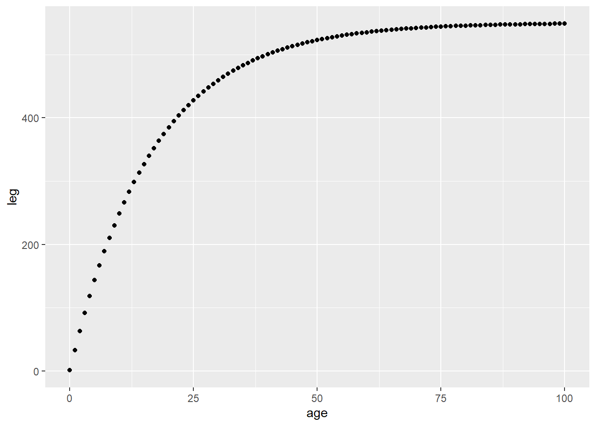
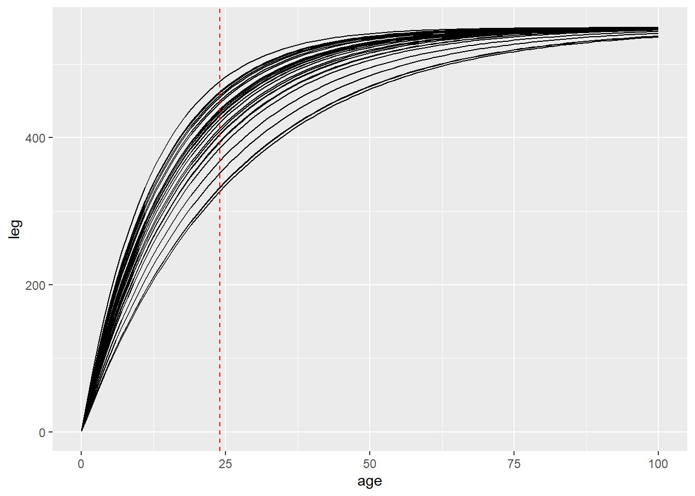
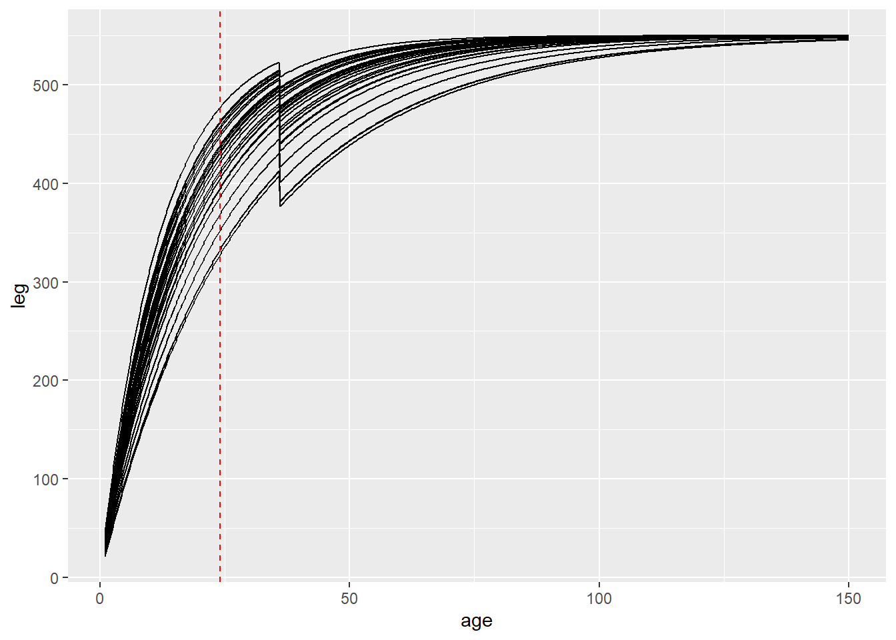
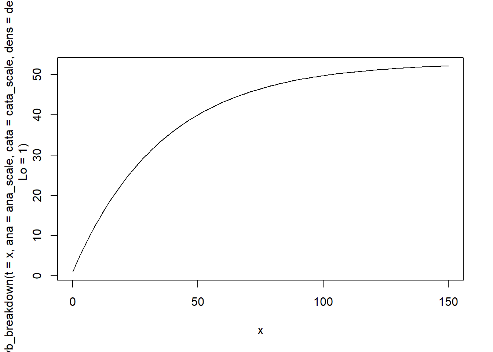
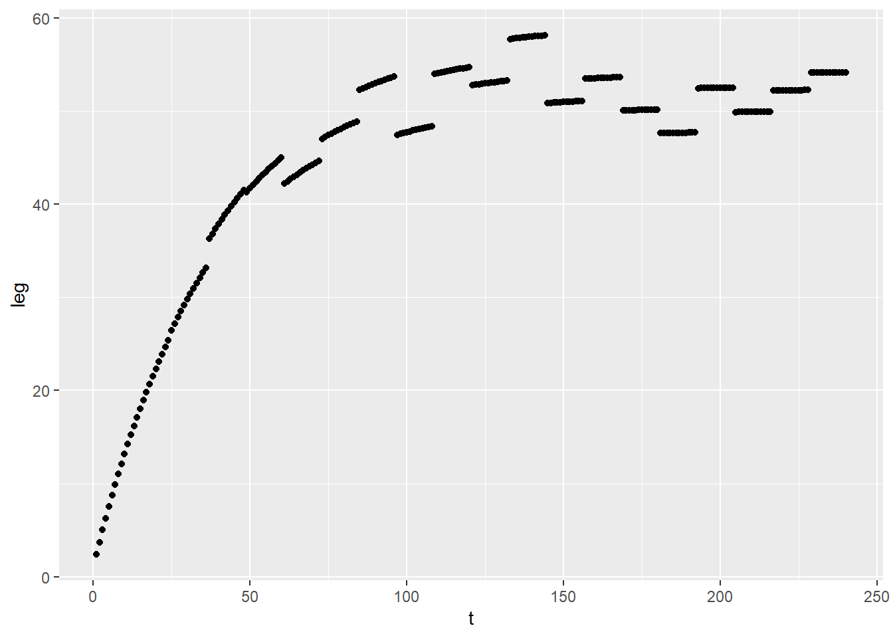
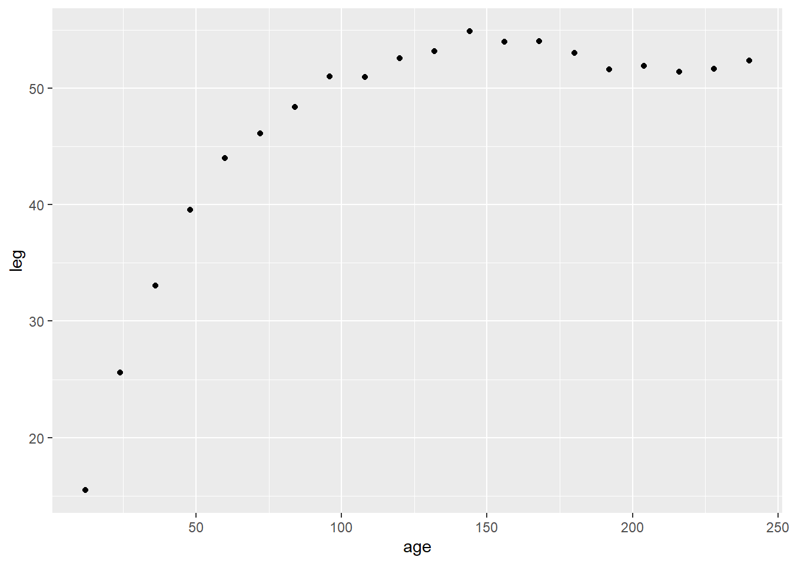
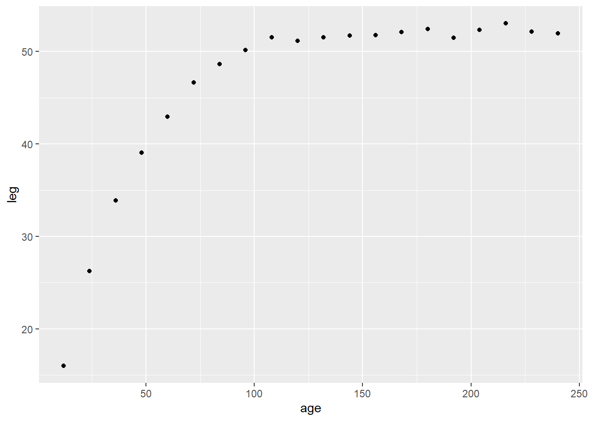

library(targets)
library(ggplot2)
library(tidyverse)
library(tidybayes)Why
Is there a cost (to growth or final size) for reproducing? Is that cost lower if you are big when you start having babies?
This is about resource allocation not fitness.
simulate growth
r <- log(0.06)
Lmax <- 550
Lmin <- 1
fake_mean <- tibble(age = 0:100,
leg = Lmin*(exp(-exp(r) * age)) + Lmax*(1 - exp(-exp(r) * age)))
fake_mean |>
ggplot(aes(x =age, y = leg)) +
geom_point()
add individual variation in growth rates
n_indiv <- 30
r_id <- rnorm(30, mean = 0, sd = .2)
many_animals <- expand_grid(id = 1:n_indiv,
age = 0:100) |>
mutate(
r_for_each = r_id[id],
indiv_grow = r + r_id[id],
leg = Lmin*(exp(-exp(indiv_grow) * age)) +
Lmax*(1 - exp(-exp(indiv_grow) * age)))
many_animals |>
ggplot(aes(x = age, y = leg, group = id)) +
geom_line() +
geom_vline(xintercept = 24, col = "red", lty=2)
Okay so suppose that all individuals reproduce at age 3 (36 months)
Reproduction comes with a cost: growth is reduced by 15%
cost_repro <- log(1-.15)
many_animals_birth <- expand_grid(id = 1:n_indiv,
age = seq(from = 1 , to = 150, length.out = 600)) |>
mutate(
repro = if_else(age >= 36, 1, 0),
indiv_grow = r + r_id[id] + cost_repro*repro,
leg = Lmin*(exp(-exp(indiv_grow) * age)) +
Lmax*(1 - exp(-exp(indiv_grow) * age)))
many_animals_birth |>
ggplot(aes(x = age, y = leg, group = id)) +
geom_line() +
geom_vline(xintercept = 24, col = "red", lty=2)
Back to the drawing board!
the VB equation has parameters made of three parts. let’s break it up
# grams per cm^3 of roo
dens <- 3200/(53)^3
# anabolism scaling with square length
ana_scale <- (3200/12)/(53^2)
cata_scale <- (3200/12)/(53^3)
vb_breakdown <- function(t, ana, cata, dens, Lo){
r <- cata/(3 * dens)
Lmax <- ana / cata
Lo * (exp(-r * t)) + Lmax * (1 - exp(-r * t))
}
curve(vb_breakdown(t = x, ana = ana_scale, cata = cata_scale, dens = dens, Lo = 1), xlim = c(0, 150))
Now try with a varying input per year
log(ana_scale)[1] -2.354584year_rates <- rnorm(n = 20, mean = -2.35, sd = .05)
tibble(t = 1:240,
year_ana = year_rates |> rep(each = 12),
leg = vb_breakdown(t = t,
ana = exp(year_ana),
cata = cata_scale,
dens = dens,
Lo = 1)) |>
ggplot(aes(x = t, y = leg)) + geom_point()
yikes. what if growth is discrete:
size <- rep_along(year_rates, list())
size[1] <- vb_breakdown(t = 12,
ana = exp(year_rates[1]),
cata = cata_scale,
dens = dens,
Lo = 1.3)
for ( y in 2:length(size)){
size[y] <- vb_breakdown(t = 12,
ana = exp(year_rates[y]),
cata = cata_scale,
dens = dens,
Lo = size[[y-1]])
}
tibble(age = seq(from = 12, to = length(size)*12, by = 12),
leg = size |>
flatten_dbl()) |>
ggplot(aes(x = age, y = leg)) +
geom_point()
let catabolism vary instead
log(cata_scale)[1] -6.324876cata_yr <- rnorm(n = 20, mean = log(cata_scale), sd = .05)
size <- rep_along(cata_yr, list())
size[1] <- vb_breakdown(t = 12,
ana = ana_scale,
cata = exp(cata_yr[1]),
dens = dens,
Lo = 1.3)
for ( y in 2:length(size)){
size[y] <- vb_breakdown(t = 12,
ana = ana_scale,
cata = exp(cata_yr[y]),
dens = dens,
Lo = size[[y-1]])
}
tibble(age = seq(from = 12, to = length(size)*12, by = 12),
leg = size |>
flatten_dbl()) |>
ggplot(aes(x = age, y = leg)) +
geom_point()
- plot with discrete model, even if continuous was fit
- potentially fit with discrete form (and of course plot with it also)
- use L(age = 24) within the equation with its own coefficient